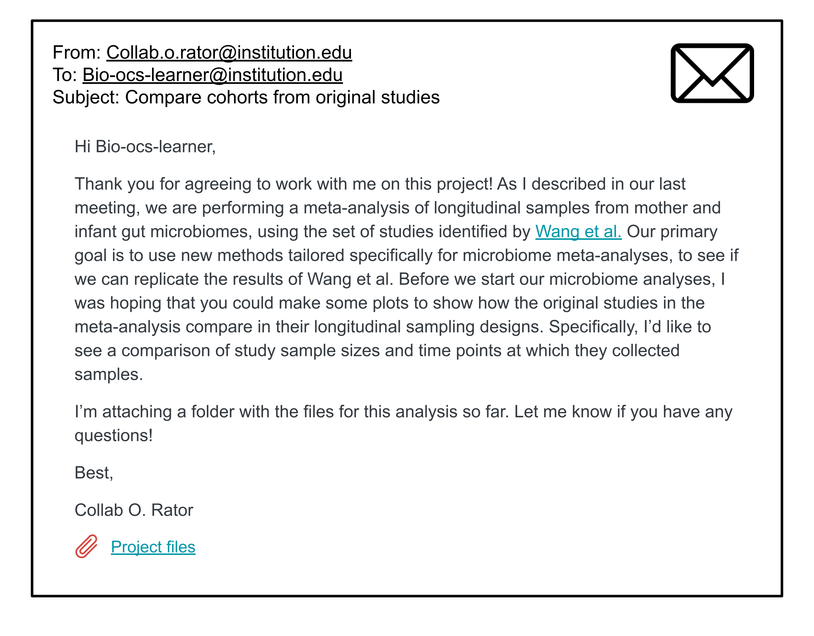
Biomedical Open Case Studies: Making version controlled reproducible analyses

Disclaimer
The purpose of the Open Case Studies project is to demonstrate the use of various data science methods, tools, and software in the context of messy, real-world data. A given case study does not cover all aspects of the research process, is not claiming to be the most appropriate way to analyze a given data set, and should not be used in the context of making policy or clinical decisions without external consultation from scientific experts or medical care professionals. In addition, due to size constraints, datasets used within a case study may be a subset of the original/full dataset.
License information
This work is licensed under the Creative Commons Attribution-NonCommercial 4.0 (CC BY-NC 4.0) United States License.
Funding information
This work is funded through the National Institutes of Health, specifically the National Institute of General Medical Sciences: Grant Number 1R25GM160622.
To cite this case study, please use:
Teichman, Sarah and Wright, Carrie. (2026). https://github.com/opencasestudies/ocs-bio-version-control/. Making version-controlled reproducible analyses (Version v1.0.0).
GitHub Repository
To access the GitHub repository for this case study see here: https://github.com/opencasestudies/ocs-bio-version-control
Keywords
- version control
- Git
- GitHub
- reproducibility
- meta-analysis
- infant gut microbiome
Prerequisites
Prerequisites
To follow along with this case study, you’ll need the following installed:
- R (install here)
- RStudio (install here) or Positron (install here) or another IDE compatible with R
It will also be helpful to be have the following skills:
- basic R skills (many introductory courses can be found online, including this one)
- familiarity with
dplyrandggplot2, or willingness to learn (thesedplyrandggplot2cheatsheets may be helpful, as well as the original open case studies)
You do not need to have any previous Git and GitHub knowledge or experience for this case study.
Motivation
In this case study, we ask you to imagine that you are working with a collaborator on a scientific project. You receive the following email, with a request for your help performing a preliminary data analysis. Don’t worry if you don’t understand the context of this analysis right now, background will be given later in the case study.
If you were to start working on this project with your collaborator, it may look something like this.
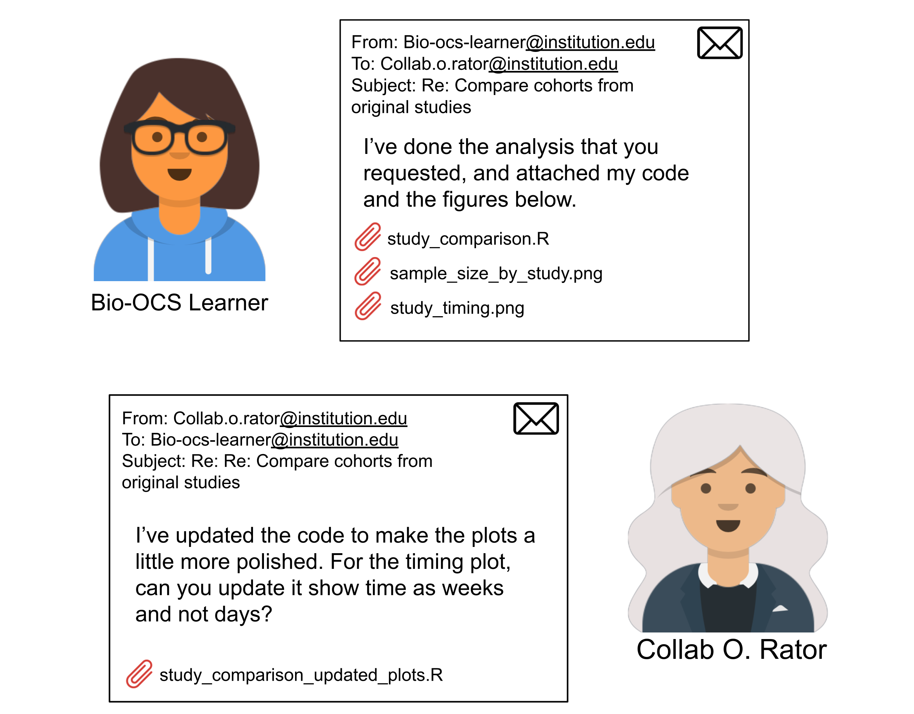
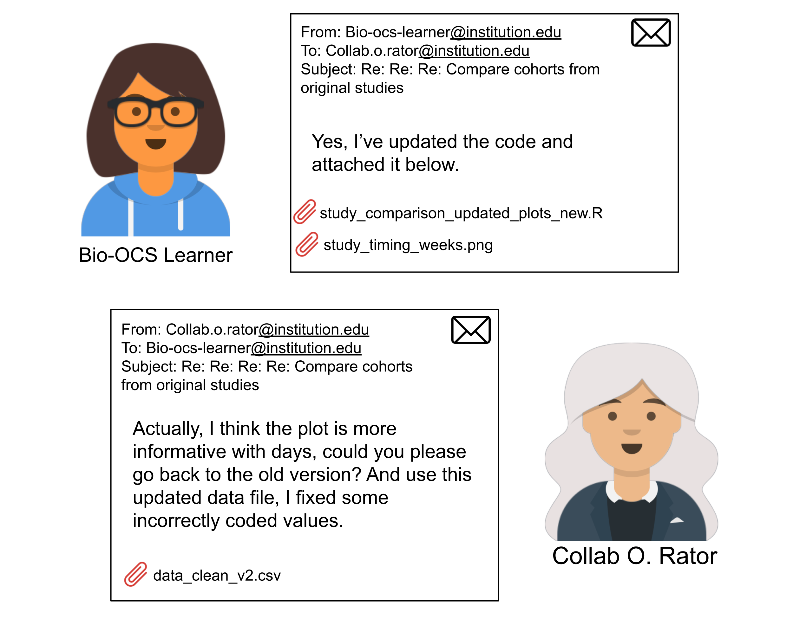
Between your own edits as you work on this project and the back-and-forth with your collaborator, it will quickly become challenging to keep track of all of the files and changes to them over time. A solution to this is version control!
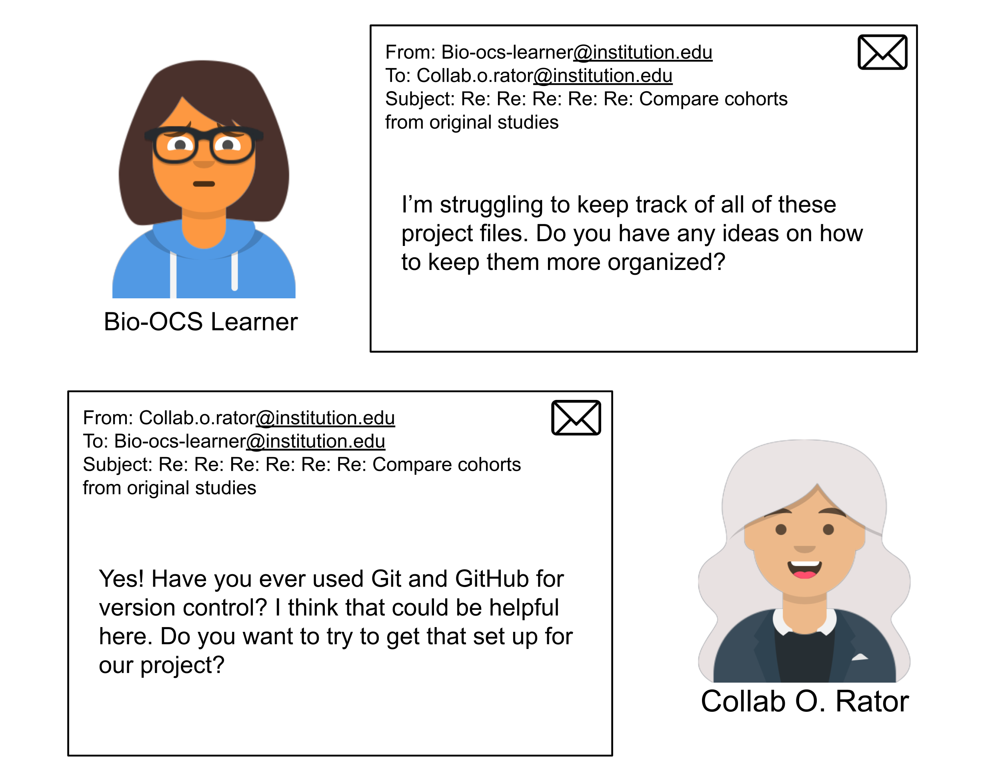
In this case study, you will learn how to use Git and GitHub to track this project and perform the requested comparison of studies used in the meta-analysis. You will also learn how version control can facilitate collaboration and make a scientific project more reproducible.
Reproducibility
The ability for someone else the run the same analysis on the same data and get the same results.
Main Question
Our main question(s)
- How does the use of version control contribute to transparent and reproducible science?
- How can Git and GitHub be used to facilitate collaboration on a research project?
- In this meta-analysis of infant gut microbiome samples, how do the original studies compare in their sampling designs?
Learning Objectives
In this case study, we will introduce version control and describe why and how to use it to track a scientific project. We will use Git and GitHub to track a comparison of the sampling designs of studies used in a meta-analysis.
The skills, methods, and concepts that students will be familiar with by the end of this case study are:
Data Science/Bioinformatics Learning Objectives:
- Understand ways in which version control facilitates reproducible science
- Understand how version control works by recording differences between versions of a project
- Follow a workflow to create and make changes to a repository with Git and GitHub
- Make pull requests to propose changes to a codebase and request review from a collaborator
- Organize a repository for a project with a README file and folders for data, figures, and results
- Understand the value and limitations of combining data from multiple studies in a meta-analysis.
- Use visualizations to compare sampling designs across a set of studies.
Context
What is a microbiome?
A microbiome is a collection of microorganisms that live in an environment. One commonly studied microbiome is the human gut microbiome. The bacteria that live in our gut help regulate our metabolism, digest fiber, protect us against pathogens, and perform other important roles in our health (Han et al. 2026). Studies have shown associations between changes to the gut microbiome and many diseases, including diabetes, autoimmune diseases, and Alzheimer’s disease.

Much of the gut microbiome composition is determined at birth and in early life, and the infant gut microbiome has implications for health later in life (Wang et al. 2021). Therefore, scientists are interested in understanding more about the factors that shape the infant gut microbiome. One question of interest is how similar the gut microbiomes are between infants and their mothers, and how this changes over time. In order to address this question, several longitudinal studies have been conducted to collect samples from pairs of infant and mother longitudinally. Sequencing microbiome samples is expensive, and therefore each study is limited in the number of samples they can collect. Want et al. conducted a meta-analysis of eight of these studies, using this large data set to compare gut microbiome composition (which microbes are there?) and function (what are the microbes doing?) between infants and mothers.
What is a meta-analysis?
A meta-analysis is the analysis of data from a collection of studies targeting a common research question (DerSimonian and Laird 1986). Ideally these studies would have similar participants and study protocols. A meta-analysis may be beneficial when the original studies have samples sizes that are too small to provide enough evidence for significant results. Additionally, meta-analyses provide opportunities to reuse data, which often require a large amount of effort and funding to collect. Meta-analyses can also be used to generate a consensus result from a set of studies. However, meta-analyses must be conducted with care, as combining data from studies with different participant populations and different study designs can lead to misleading results.
There are two general approaches to performing meta-analyses (Andrade 2025). In the first approach, estimates or other summaries from each study are combined in order to generate a summary from the set of studies. One benefit of this approach is that the original data from each study are not needed. However, original studies can only be combined if they estimate the same summary of their population (for example, a difference in means between two groups or an odds ratio). Additionally, the data would need to be analyzed in the same way for each study (for example, the same variables would need to be adjusted for). In the second approach, data from each of the studies are combined and re-analyzed jointly, accounting for the study from which each observation originated. A benefit of this approach is that new research questions can be asked, as long as the relevant data exist from each study. However, it requires accessing the raw data from each study.
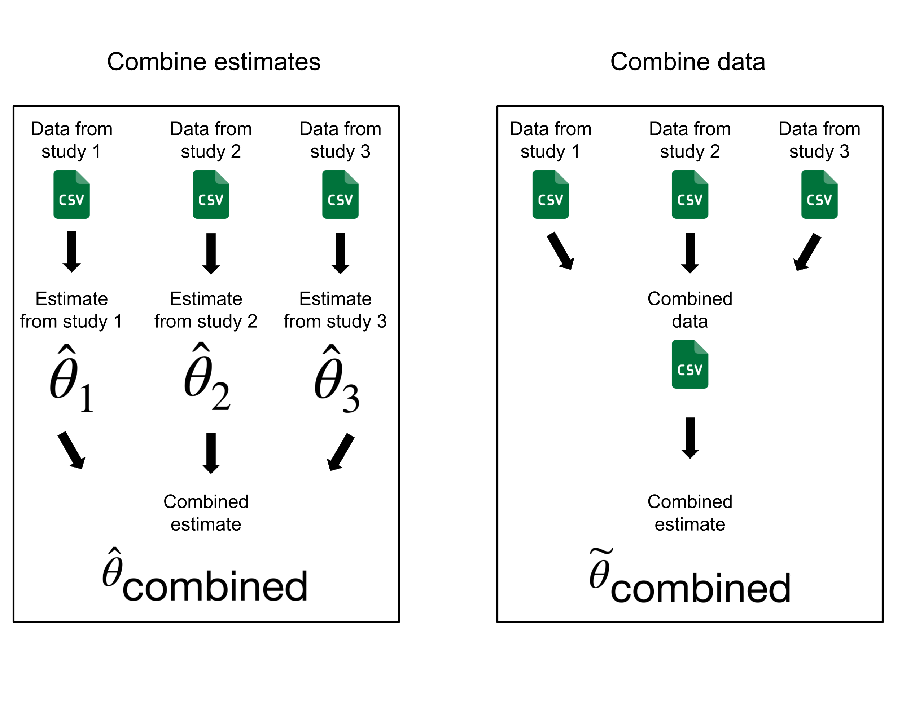
Wang et al. (2021) take the second approach, using the raw data from eight longitudinal studies of infant and mother gut microbiomes, processing the datasets with a unified protocol, and conducting analyses on the combined dataset. When they fit models to the data, they “block” by study, which means they include a term in their models that accounts for which study each participant came from, so that results are not confounded by differences between study cohorts. However, the validity of this approach depends on how comparable the original studies are. In particular, differences in sample size and longitudinal sampling schedules may affect the interpretation of results. This motivates our exploration of the similarities and differences between the various study cohorts before the data were pooled. We want to understand how comparable these studies are, both in terms of sample size (how many samples are in each study?), and in terms of their longitudinal sampling study design (when in the lifespan of the infants did they take samples?).
Introduction to Git and GitHub
Before we start to address your project with Collab O. Rator, we will provide an introduction to version control with Git and GitHub. In this section, you will learn more about what Git and GitHub are, create a GitHub account, download Git software, and create your first version controlled project. In the next section we will return to the infant microbiome meta-analysis project.
Reproducibility and version control
Reproducibility
The ability for someone else the run the same analysis on the same data and get the same results.
When conducting a scientific project, reproducibility is very important. If another researcher can use your data and code and generate the same results, then your conclusions are more credible to the scientific community. Version control is a tool that enables reproducible research by recording changes to a project over time. When used carefully, it gives a complete history of changes made over the course of a project. It also provides a digital backup and an online repository of code and data for other researchers to see. Version control makes collaboration easier, automating the sharing of work in-progress and providing a system to propose and accept changes. While several tools exist for version control, we will introduce Git and GitHub, two of the most commonly used version control tools.
Why use version control?
We will refer to two papers about version control.
Version control resources:
- Blischak, J. D., Davenport, E. R., & Wilson, G (2016). A Quick Introduction to Version Control with Git and GitHub, PLoS Computational Biology, 12(1).
- Bryan, J (2018). Excuse Me, Do You Have a Moment to Talk About Version Control? The American Statistician, 72(1), 20-27.
Consider a typical workflow when you have a project with multiple files (for example: data, code, resulting figures). You likely have a folder on your computer where you keep these files. When you edit a file you save it, and you have access to the most recent version. You might run into a situation where you want to try something new, so you save “project_file_old.R” along with “project_file_updated.R” or perhaps “project_file_july_2026.R” or eventually “project_file_final_version_4_final.R”. If you haven’t saved an older version of a file but you wish you could revert to the version from last week before you tried something new, you would be out of luck.
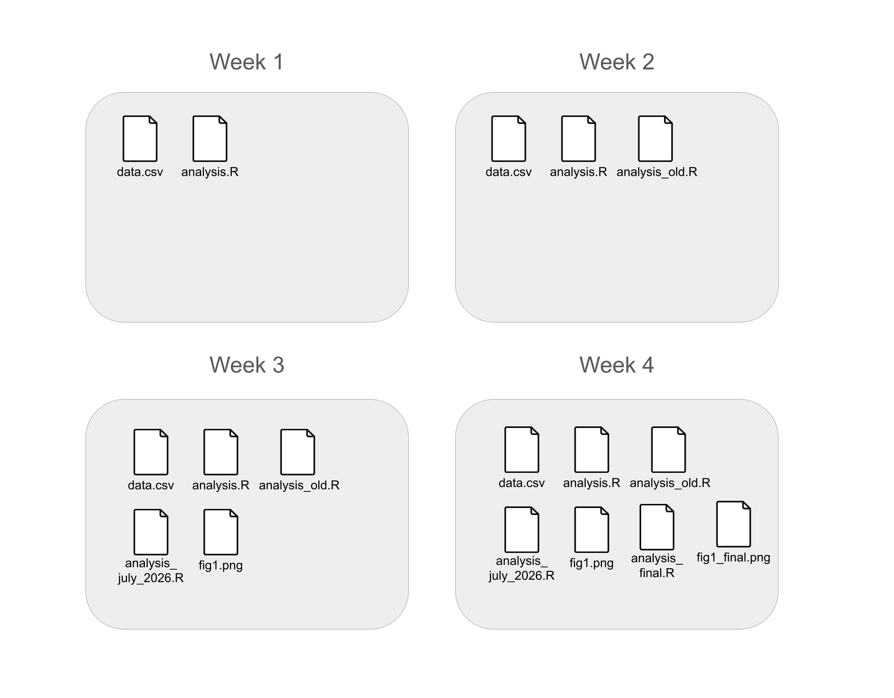
Similarly, think about how you might work on that same project with a collaborator. Perhaps you both have a folder on your computer for that project, and when you make an update you email the file to your collaborator, and they copy that update into their file, or save your file in their folder. Perhaps the two of you update the same file at the same time and then you have to go through line by line to merge the updates into a single version of the file.
to-do: Include similar image to above, but if multiple people are working on a project and sending files back and forth
While both of these organizational systems can work well when carefully maintained, they are time consuming and prone to error. Version control is a tool that makes it easier to manage sets of files for projects. It automates several of the processes described above, and makes others dramatically easier. While version control was originally made for software engineers to work together on large projects, it is now commonly used for scientific projects as well.
At its core, version control lets the user track sequential changes to a set of files, with a short message attached to each version. Multiple people can work with the same version controlled folder, and different versions of files can automatically be merged, unless they are directly in conflict.
What are Git and GitHub?
Git is a version control tool, and GitHub is an website for hosting folders that are tracked with Git. Git works locally on your computer to record different versions of a project, and GitHub works online to provide a digital backup of files, let you connect with collaborators, and optionally create a web presence for your project.
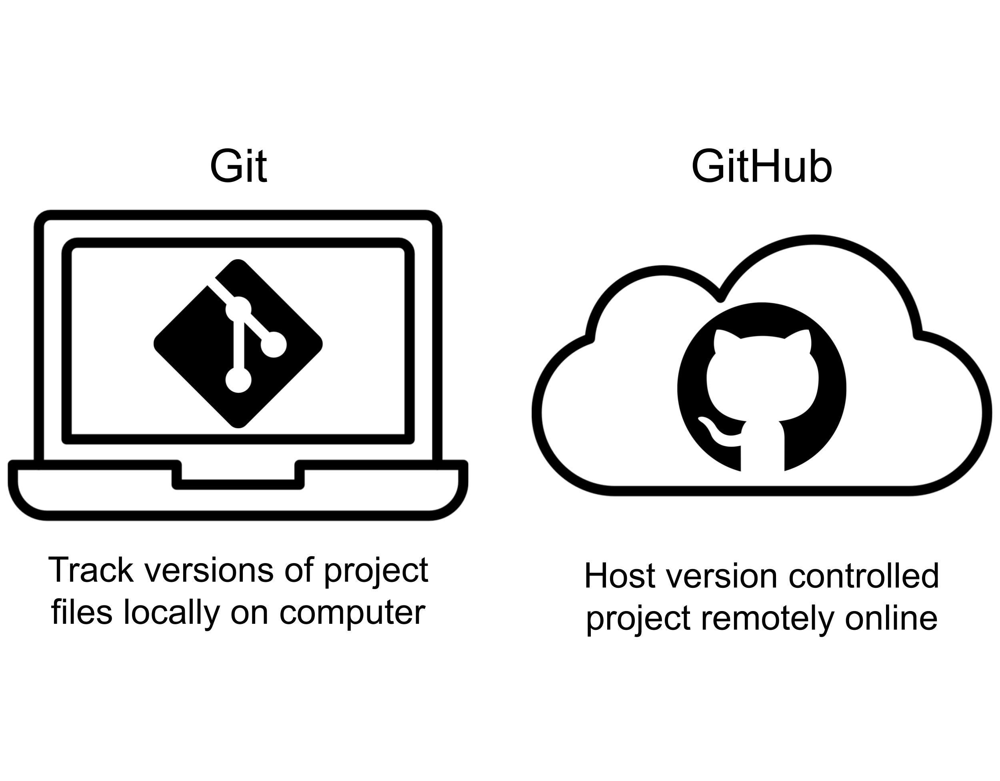
Git
The files that are tracked as part of a version controlled project are contained in a repository.
Repository (or repo for short)
A folder in Git that contains all of the files to be tracked for a project.
When you set up a repository, Git will save an initial version of that repository. Git works by tracking the evolution of a repository through a series of commits.
Commit
A snapshot of a repository at a certain time.
Another way to think about a commit is as a save point in a video game. This means that it saves your work up to a certain point in time.
Each time that you tell Git to commit a version of your project, it will save it as a series of changes that list the differences between the most recent commit and the current commit. Git will not automatically make commits for you. You need to decide when to commit. If you want to return to a previous version of a project, you can return to the version of files at any commit.
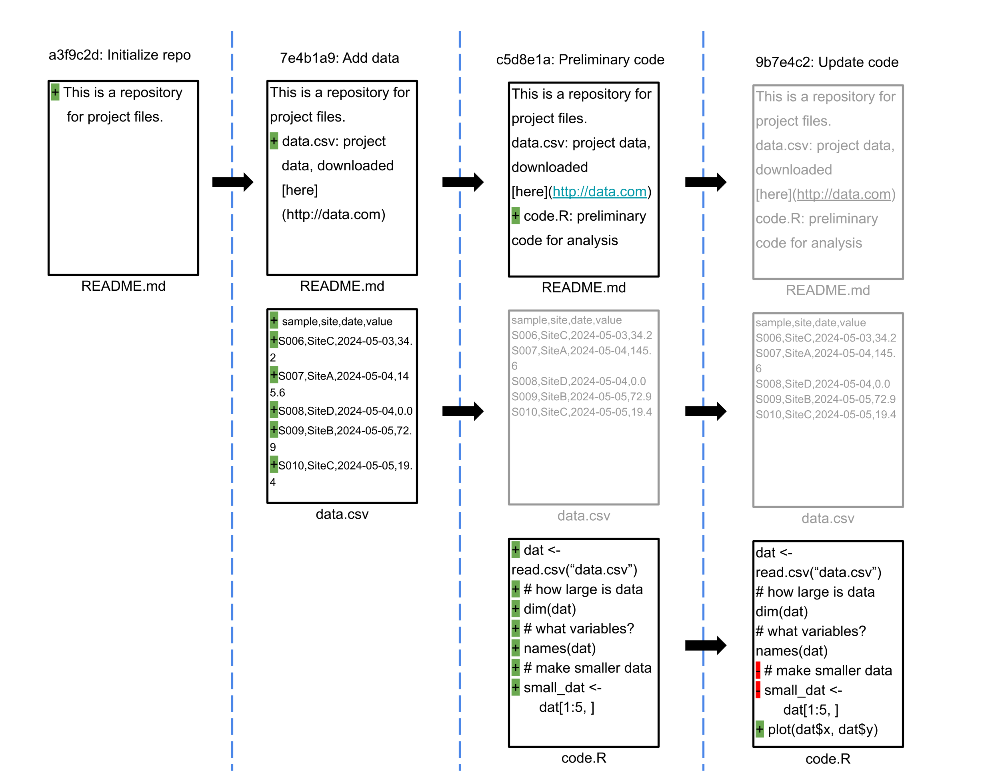
GitHub
While you could only use Git locally to track versions of files, it is much more powerful when combined with GitHub. You can use GitHub to host a Git-tracked repository online. We will use the terms local repository and remote repository to distinguish between these.
Local
The Git-tracked repository on your computer.
Remote
The online version of the repository tracked on GitHub.
There are several benefits to pairing your local repositories with remote repositories on GitHub.
- You have a backup of files in case something happens to your computer
- You can easily work with collaborators
- You have a central location where your data and code are stored for a project that can be viewed by and shared with other scientists
Creating new repositories
There are two ways to start new version controlled projects with Git and GitHub. You could create a new repository locally on your computer, track it with Git, and then “push” it to GitHub, creating a remote version of the repo. Or, you could create a new remote repository on GitHub and then “clone” it to your computer, creating a local version. We will provide examples of both workflows in the next section.
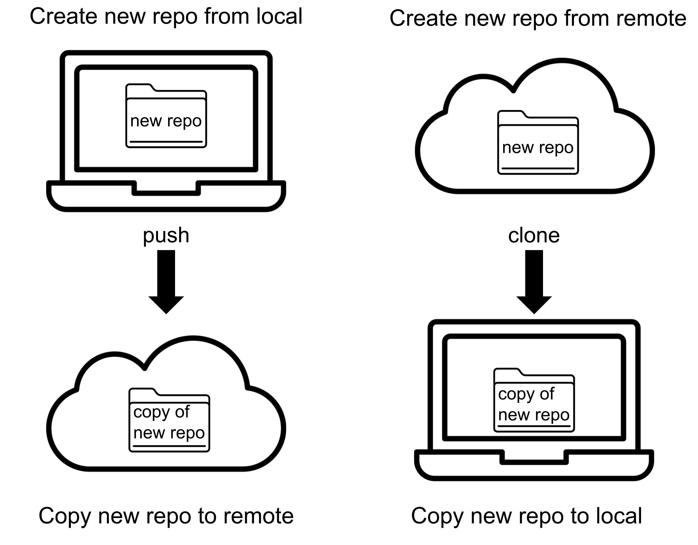
Getting started with Git and GitHub
Creating a GitHub account
We will start with GitHub. If you do not have an account, make one here.
When you choose a username, consider advice from Jenny Bryan (a data scientist who has thought a lot about version control). She suggests choosing a username that incorporates your real name and that you would be comfortable sharing with professional colleagues.
Creating a new GitHub repository
Now that you have a GitHub account, you can create your first repository.
To create your repository: - click on the menu bottom (three horizontal lines) - click “Repositories” - click the green button that says “New repository”
This will take you to a new page. GitHub will automatically set you as the owner of the repository, and you can choose a name. Let’s call this repository “my-first-repository”.
A few notes on naming repositories:
- keep the name descriptive but short
- don’t use spaces, instead use “-”, “_“, or”.”
Next, add a short description for this repository. Toggle the bottom next to “Add README” to “On”. For now, we won’t worry about visibility, a template, .gitignore, or license.
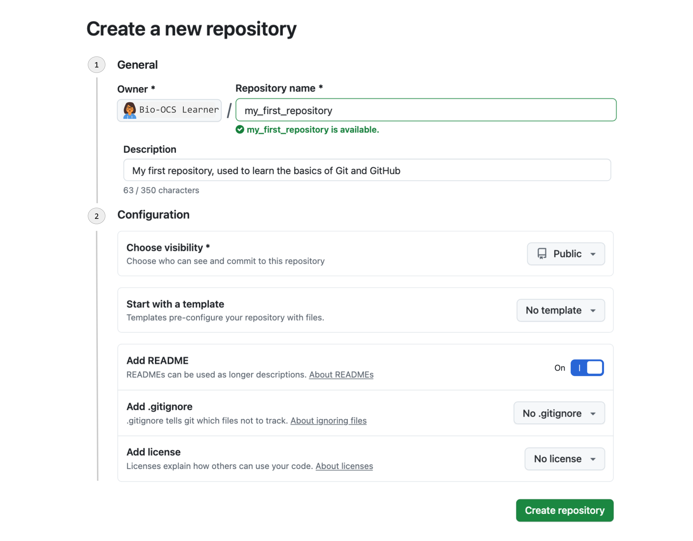
Use the drop-down sections to learn about each of the configuration options.
Visibility
By default your repository will be set to public, which means that anyone can view all of the files contained in it. If you would prefer that only you and collaborators that you add can view the contents, you can set the visibility to private.
Template
A template is an existing repository that you can use as a template for new repositories. A repository made from this template will have the same folders and files as the template repository. You can make any repository that you have access to into a template. Typically, you will not use a template when creating a new repository.
README
We will discuss README files in more detail in the project organization section, but a README file explains what your repository is used for and what files it contains. If you are creating a repository from scratch, we strongly suggest that you include a README.
.gitignore
Often when you commit files you will commit all files in your repository. However, you may have files that you don’t want to commit, such as large data files or intermediate files (we will discuss which files you may not want to commit later in the project organization section). If there is a file that you don’t want to track with version control, you can add it to the .gitignore file, to tell Git to ignore it. When you click the down arrow next to “No .gitignore” it will provide several templates. For a project using R, the “R” template is a good place to start. It includes files often associated with projects in R that are not typically tracked with version control.
License
A license is a legal document that states who can use your code. Although it may seem counterintuitive, a license typically makes your code more “open”, which means that other people can use it with fewer restrictions. There are two main types of licenses used for most R projects hosted on GitHub: permissive (MIT) and copyleft (GPL). A permissive license means that people can use your code with minimal restrictions. A copyleft license means that any code that incorporates your code must also be open-source. You can read more about licenses for open-source projects here, or use this resource to see what license might be most appropriate for your project.
Once you click “Create repository”, you will be brought to the GitHub page for your repository. GitHub URLs all have the same format: “https://github.com/your_user_name/your_repository_name”.
If you look at your repository, you will see that it has one file, README.md. This is where you will document what is contained in your repository, and it will serve as a homepage for your project. It is written in Markdown, an easy language that can be used to format documents (you can find more information about how Markdown works and its syntax here). You will now edit the README:
- click the pencil on the upper right of the README
- add a new line to your README document that says “Adding a commit from GitHub.”
- click the green button that says “Commit changes”
- provide an informative commit message, something like “adding new line to README”
- click the green button that says “Commit changes”
- click the repository name in the upper left to navigate back to the home page
to-do: replace this image with a simplified figure with some cartoon elements

Let’s now look at the commit history for this repository. We can do that by clicking where it says “2 Commits” just below the green “Code” button.
This brings us to a list of commits for this repository. You should see two commits, the initial commit that created the repository and the one you just made when you edited the README file. Click on the title of the newer commit.
to-do: add image of this
This will bring you to information about the commit. Each commit has an alphanumeric hash (set of letters and numbers), which uniquely identifies that commit. In this view, you can see each file that has been changed in your commit, as well as the changes to the files. Here, we can see with the plus signs that you’ve added a line to the README. This type of visual representation of a commit, in terms of the changes between files, can be helpful when you want to understand the history of a project.
Installing GitHub Desktop
Next, we will move from interacting with GitHub to interacting with Git. First, we recommend that you install GitHub Desktop. This is a GUI (graphical user interface) that makes it easier for us to interact with Git. While we will use GitHub Desktop in this case study, another common way to interact with Git is through the command line on your computer. If you are already comfortable using the command line, you may prefer this to GitHub Desktop. When we use GitHub Desktop for version control tasks in this case study, we will also provide the command line code for all Git operations.
More information about the command line.
You may have also heard this called the shell, terminal, console, or command prompt. The command line lets us interact with our computers by typing commands (as opposed to using a graphical interface which involves clicking buttons and menus). These commands let you perform tasks such as navigating and modifying your file system, installing programs, running code, and working with Git. Each of these tasks can also be performed using a graphical interface. Some people prefer the visual layout of a GUI, while others prefer the simplicity and centralized control of the command line.
Follow this link to install GitHub Desktop.
If you are using a Mac, it will ask you if your Mac has a Apple silicon or Intel chip. Click here for more information.
To check whether your Mac has an Apple silicon chip or an Intel chip, click the Apple menu -> “About This Mac”. If the information window shows “Chip” then your Mac uses Apple silicon. If the information window shows “Processor” then your Mac uses an Intel processor.
Installing Git
If you have successfully installed GitHub Desktop, then Git is already installed on your system and no further installation is required.
If you are unable to install GitHub Desktop or would prefer not to install GitHub Desktop, you can install Git using the command line. Click here for more information.
First, we will see if Git is installed on your computer, and install it if not. We will start by opening the command line.
Open the application called “Terminal”. You can find this by using Spotlight Search and searching for “Terminal”.
Open the application called “Command Prompt”. You can find this by using the Start menu and searching for “Command Prompt”. You could instead use the PowerShell by searching for “PowerShell” instead.
Open the application called “Terminal”. You can find it by using your system’s application menu and searching for “Terminal”.
In the command line, type:
git versionIf the output tells you which version of Git is installed, then you already have Git. For example, if Git is already installed, the output may look like:
git version 2.50.1If you see a message like “git: command not found” or “git is not recognized” or a prompt to install something, then Git is not installed and you’ll need to install it.
To install Git, follow these instructions:
Connecting Git to GitHub
If you have GitHub Desktop installed, we can use it to authenticate your GitHub account with Git. We could also do this with the command line, but GitHub Desktop makes it easier.
When you open GitHub Desktop, it will prompt you to sign into GitHub. If it does not, then follow these instructions, choosing instructions for Mac or Windows based on your operating system.
Next, we will configure Git. This means that you will tell Git your name and email. Follow these instructions, again choosing instructions for Mac or Windows based on your operating system.
First we will tell Git your name and email address. Open the command line and enter the following:
git config --global user.name "Your name here"
git config --global user.email "Your email here"
git config --global --listThe third line should print your name and email correctly.
Next, you need to connect your GitHub account to your local Git.
GitHub no longer supports using passwords to connect Git and GitHub, so you’ll instead need to use a Personal Access Token (PAT). To create a token, follow these instructions. Click “Generate new token” and choose “Generate new token (classic)”. Give your token a name and expiration date. Select the “repo” scope. Click “Generate Token”. Copy the token to your clipboard, or keep this window open. You will not be able to access this again.
Now, open the command line and run the following:
git config --global credential.helper osxkeychaingit config --global credential.helper managerIf available, run:
git config --global credential.helper managerIf that does not work, use:
git config --global credential.helper cacheThis tells Git to remember the login credentials that we will provide so you won’t need to enter them each time.
Next, we need to trigger a GitHub credentials check. We will do this by cloning the repository that you made (this means we will make a local version of this repo). Run the following, replacing “your_username” with your username:
git clone https://github.com/your_username/my-first-repository.git Running this command should prompt you to give a username and password. Use your GitHub username, and the PAT you just generated as the password (do not use your GitHub password). Git will now store these credentials so you won’t need to enter them again. When your PAT expires, you will need to follow these steps again.
Creating a local clone of your GitHub repository
You’ve finished setting up GitHub, Git, and GitHub Desktop, great job! Now, we can create a local version of “my-first-repository” that you made on GitHub earlier.
Making a local copy of a repository that is hosted on GitHub is called “cloning”. Start by navigating to your repository on GitHub, and copy the URL.
to-do: add image
From GitHub Desktop, go to “File -> Clone Repository” and then provide the URL to your GitHub repository. Now, you should be able to see a window in GitHub Desktop that corresponds with “my-first-repository”. If you click on history, you can see a list of commits to this repository.
You were already asked to clone this repository in the last section, in order to trigger Git’s login credentials. If you haven’t done that, open the command line and enter the following, replacing “your_username” with your username:
git clone https://github.com/your_username/my-first-repository.git You will know that this has worked if you see the following output:
Cloning into 'my-first-repository'...Next, you will open the local repository. RStudio and Positron have different approaches to opening folders.
The easiest way to work with a Git-tracked repository in RStudio is to make an RStudio project. A project is a folder that R can open as a self-contained unit. The most useful part of an RStudio project is that you can use relative file paths, with the folder that you used to create the project as the root. Using relative file paths for a project, as opposed to absolute file paths that are specific to your personal computer, make it easier to collaborate with other people.
In order to open your Git-tracked repository as an RStudio project, open RStudio and click “File -> Open Project”. This should prompt you to open your file browser, and you should navigate to the folder called “my_first_repository”, which was created when you cloned the repository. Once you select the correct folder, RStudio will open the project. If you look at the “Files” panel, you’ll see the README that you made for “my_first_repository” on GitHub. You will additionally see a file called “my_first_repository.Rproj”. This file is automatically made by RStudio when opening a new project, and saves information about the project.
In Positron, click “File -> Open Folder…” and then navigate to the folder called “my_first_repository”, which was created when you cloned the repository. Once you select the correct folder, Positron will open it. In the file explorer, you will be able to see the README that you made for “my_first_repository” on GitHub.
If you are using another R IDE besides RStudio or Positron, you should look up instructions for opening a folder in your environment.
Add, commit, push
Next, we will create a new file locally. Create a new R file with “my-first-repository” and call it “01-calculations.R”. In this file, include the following:
x <- 103
y <- 5
x * ySave this file. Now, we will discuss how to track a new file with Git.
to-do: add image
to-do: make graphic showing good and bad commit messages:
good
- “Add ‘01_clean_data.R’ for data cleaning.”
- “Add boxplot to ‘03_make_plots.Rmd’”
- “Removing ‘old_data.csv’ because it has been replaced by a newer version of the dataset”
bad
- “commit”
- “adding file”
- “Add ‘01_clean_data.R’, which takes the data found in ‘data/data.csv’, removes all NA observations, renames columns, converts the data into long format instead of wide format, and then saves the new version of the data as ‘data/cleaned_data.csv’”
- “blahhhhhhhh removing this stupid file that I hate”
to-do: make graphic showing good and bad commit messages:
good
- “Add ‘01_clean_data.R’ for data cleaning.”
- “Add boxplot to ‘03_make_plots.Rmd’”
- “Removing ‘old_data.csv’ because it has been replaced by a newer version of the dataset”
bad
- “commit”
- “adding file”
- “Add ‘01_clean_data.R’, which takes the data found in ‘data/data.csv’, removes all NA observations, renames columns, converts the data into long format instead of wide format, and then saves the new version of the data as ‘data/cleaned_data.csv’”
- “blahhhhhhhh removing this stupid file that I hate”
Now, navigate back to GitHub Desktop. Where it previously said “no local changes”, it now will show changes to your repository. You should see your new file name “01-calculations.R” with a green plus next to it.
If you are using RStudio, you will likely see additional added files here.
When you created a RStudio project, RStudio automatically created a “my-first-repository.Rproj” file to manage the project, and a “.gitignore” file to avoid tracking several hidden files that manage the project. Because these files were added, they are now included in the changed files that you see in GitHub Desktop. It is typically recommended to track your .Rproj and .gitignore files with Git.By default, the box next to added or updated files is checked. This means that each of these files are “staged”, or ready to be included in a commit and added to the repository history. If you uncheck the box, you are telling Git that for now you would not like to track that file with version control. If you would like to tell Git to never track files, you should add them to a .gitignore file.
In the lower left corner you will see a box that says “Summary (required)” and “Description”. This is where you will put your commit message.
A few pieces of advice to consider for your commit messages:
- A commit message should be informative. Think of a collaborator (or yourself in a few months) reading the commit message. It should tell the reader why you’ve made this commit. Did you add a file? Did you fix a bug in the code? Did you remove an outdated data file?
- A commit message should be concise. Avoid adding too many unnecessary details here. The reader can always look at the differences in files for the commit to see exactly what you’ve done.
- In a public repository, the commit message will be visible to anyone and exist as long as the repository does. Make sure that your message is appropriate and you’d be comfortable with colleagues seeing it.
For this commit, you might use the summary “Adding new file 01-calculations.R” to perform calculations.”
Once you’ve added the commit message, you are ready to commit these files. Click “commit to main”. Now these changes have been entered into the version control history of your repository in Git.
We have one more step to update the GitHub repository, which is to “push” these files to GitHub. This is the step that transfers local changes to the remote repository. Once you commit you will see a box in GitHub Desktop that says “Push commits to the origin remote”. Click this box.
Now, open your project in GitHub. You should now see the file that you added locally, as well the commit message.
Open the command line, navigate to the folder that contains your repository, and enter the following:
cd my-first-repositoryThis will move you into the repository folder. Next, enter:
git statusThis will list untracked files, which are files that Git is not keeping track of.
If you are using RStudio, you will likely see additional added files here.
When you created a RStudio project, RStudio automatically created a “my-first-repository.Rproj” file to manage the project, and a “.gitignore” file to avoid tracking several hidden files that manage the project. Because these files were added, they are now included in the changed files that you see in GitHub Desktop. It is typically recommended to track your .Rproj and .gitignore files with Git.In order to tell Git to start tracking files, enter:
git add 01-calculations.RIf you are using RStudio, you can also track the additional files that have been created.
git add my-first-repository.Rproj .gitignoreIf you ever want to tell Git to track all files, you can use the command git add ..
Next, we will commit these files (remember, this is similar to creating a snapshot of these files, or to creating a save point in a video game). The command git commit -m "..." commits the staged files and the flag -m adds a commit messages.
A few pieces of advice to consider for your commit messages:
- A commit message should be informative. Think of a collaborator (or yourself in a few months) reading the commit message. It should tell the reader why you’ve made this commit. Did you add a file? Did you fix a bug in the code? Did you remove an outdated data file?
- A commit message should be concise. Avoid adding too many unnecessary details here. The reader can always look at the differences in files for the commit to see exactly what you’ve done.
- In a public repository, the commit message will be visible to anyone and exist as long as the repository does. Make sure that your message is appropriate and you’d be comfortable with colleagues seeing it.
For this commit, you might use the summary “Adding new file ‘01-calculations.R’ to perform calculations.”
git commit -m "Adding new file '01-calculations.R' to perform calculations."We have one more step to update the GitHub repository, which is to “push” these files to GitHub. This is the final step that updates the GitHub repository to include the changes that we made locally. To push, enter:
git push Now, open your project in GitHub. You should now see the new file that you made locally, as well the commit message.
Finally, we’re going to make another change from GitHub, and then “pull” that change into our local Git repository. We’ll follow the same steps to make a change on GitHub:
- click the pencil on the upper right of the README
- add a new line to your README document that says “Adding another commit from GitHub.”
- click the green button that says “Commit changes”
- provide an informative commit message, something like “adding one more new line to README”
- click the green button that says “Commit changes”
- click the repository name in the upper left to navigate back to the home page
Now, return to GitHub Desktop. Do the following:
- In the upper banner, click where it says “Fetch origin”. It should then update and say “Pull origin”.
- Click “Pull origin”.
- Go to the “History” pane, and you’ll see the most recent commit that you made on GitHub, now included in your local repository.
If you return to RStudio or Positron and open “README.md”, you will now see the update that you made on GitHub.
Open the command line, navigate to the folder that contains your repository, and enter the following:
git pullIf you return to RStudio and open “README.md”, you will now see the update that you made on GitHub.
What you’ve done
In this section you have made a GitHub account, installed Git and GitHub Desktop, configured Git and GitHub to talk to each other, and made your first repository. You’ve learned how to make changes to the remote on GitHub and transfer them to the local repository on your computer, as well as do the opposite.
In a typical GitHub workflow, you will rarely be making changes from GitHub. Instead, you will often be working with one or multiple collaborators on a repository. Once your collaborator makes changes locally, they can push those changes to GitHub, and then you can pull those changes to your local copy of the repository.
to-do: Add image to show a summary of the clone/stage/commit/push workflow
Tips
- Commit often. A history will not be helpful if you run an entire analysis locally and then commit everything in a single commit.
- If you are working on a repository with multiple contributors, make sure to pull each time you work in order to work on the most up-to-date version of the repository
Create version controlled repository for your project
Now, we will return to the project with Collab. O. Rator. In the previous section, we created a repository on GitHub, and then cloned to make a local copy. Here, we will start with a local folder, track it with Git, and then create a remote version on GitHub.
First, download the .zip file here. Your browser may automatically unzip this file to create a folder called “infant_gut_files”, if not then unzip the file.
Now, go to GitHub Desktop and do the following:
- click the button “Add” in the top right
- click “Create New Repository”
- give your repository the name “infant_gut_analysis”.
- leave the box “Initialize this repository with a README” unchecked (because a README is already included in the set of files).
- under Git Ignore choose “R” and under License choose “MIT License”.
Now, copy the contents of the “infant_gut_files” into the new repository that you just created with GitHub Desktop
Once you add these files, return to GitHub Desktop. You should see a set of staged files.
- add a commit message and commit this change
- you should then see an option to “Publish repository”, click this
- you should now see the option “Open the repository page on GitHub in your browser”. Clicking this will bring you to the new GitHub repo that you just made for this project!
Open the command line, navigate to the folder that you have unzipped, and enter the following:
git initIf you look into your folder you will not see any changes. However, this command creates a hidden .git folder within the current folder, which contains the files that are needed to start tracking this folder with Git. It is now a Git-tracked repository. Now we will stage all files, so that Git knows to track them, and commit them, so that Git saves the set of files as part of the history.
git add .
git commit -m "track all files for infant gut project" Next, you will need to create an empty repository on GitHub. Go to GitHub and create a new repository called “infant_gut_analysis”. Importantly, this time do not check “Initialize with README”, this should be a fully empty repository. Copy the URL of this repository.
Now, return to the command line and enter (replacing the URL below with the URL that you just copied):
git remote add origin https://github.com/your_username/infant_gut_analysis.gitOpen this repository in RStudio or Positron
Finally, we will open this repository with RStudio or Positron.
In order to open your Git-tracked repository as an RStudio project, open RStudio and click “File -> Open Project”. This should prompt you to open your file browser, and you should navigate to the folder called “infant_gut_analysis”. Once you select the correct folder, RStudio will open the project.
In Positron, click “File -> Open Folder…” and then navigate to the folder called “infant_gut_analysis”, which was created when you opened the .zip file. Once you select the correct folder, Positron will open it.
If you are using another R IDE besides RStudio or Positron, you should look up instructions for opening a folder in your environment.
Branches
Question: should we explain branches now while talking about Git and GitHub, or later (in data visualization) when we need them?
One useful feature of Git is the ability to make branches. A branch is a history of commits, and by default a repository that is tracked by Git starts with the “main” branch. Multiple branches provide parallel versions of the repository that can be developed separately. For example, you may have a version of your analysis and results in the main branch, but you want to experiment with changing a parameter. You could do this in a separate branch. This would let you work on the experimental version of your analysis while also having a stable version of your analysis elsewhere. You can switch between branches depending on what version of the analysis you want to work with on a given day. If you eventually decide that you want to move forward with the changed parameter, you can merge your experimental branch back into your main branch.
Merge
Integrating changes from one branch into another branch.
If there are no lines of code in any files that are directly in conflict, then merging will automatically combine the sets of files into a single version to move forward with. If there are lines that are directly in conflict, this will create what is called a merge conflict.
to-do: link to merge conflict section in troubleshooting Git and GitHub section
to-do: Add image of merged versions
Branches are also helpful when working with collaborators. If you are developing a new part of an analysis, you can do it in a separate branch. When you are ready for your collaborator to review your work, you can submit a “pull request”, which is a request to merge your branch with the main branch. Your collaborator can review all of the changes between your branch and the new branch, and either approve the pull request or request edits before merging.
to-do: link to sections that describes pull requests in more detail below.
Create a new branch for this analysis
You will create a new branch with GitHub Desktop.
In GitHub Desktop:
- navigate to the tab in the top left of the window that says “Current Branch”
- click on this tab, and you should see a button that says “New Branch”
- name your new branch “study_comparison”.
Open the command line, navigate to the folder that you have unzipped, and enter the following:
git checkout -b study_comparisonWhen you create a new branch, you can name it by providing a new branch name (we name the new branch “study_comparison” above).
Scientific project organization
Reproducibility considerations
Although this is not directly related to version control, there are some useful ideas to know about organizing a scientific project, that will improve reproducibility. While most people have their own approaches to scientific project organization, there are a few principles that most successful organization schemes have in common. More information can be found in this course.
- file names should be concise but informative
- there is one central folder to contain all files for each project
- there is a central file (often called the README) that explains what files are included and how to use them to run the analysis
- there are folders to keep similar files together
- data folder (this could be split into raw data and processed data)
- figures folder for any figures made for the analysis
- results folder for any results that should be shared or would take moderate or more computation to re-generate
- number code scripts in the order that they should be run to generate results
Organization of this project
If we look at the files contained in the “infant_gut_analysis” repository, they follow the recommendations provided above.
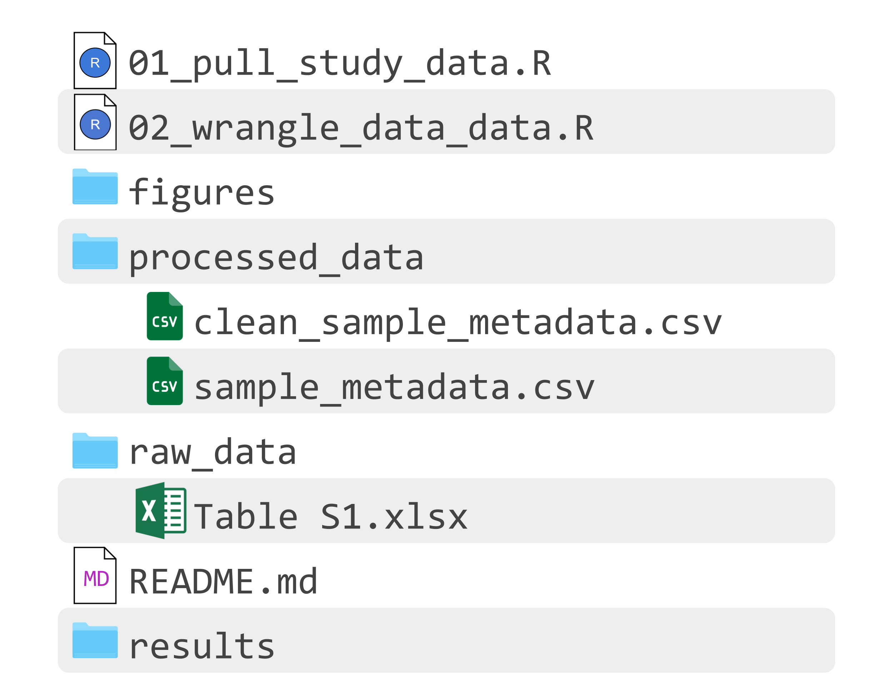
README
A README file should describe the files related to your scientific project. It should describe where inputs come from, what each script does, and where outputs are generated. If someone reads through your README, they should know where to find each component of your analysis.
Question opportunity
Read through the README.md file for this project. Which script generates “sample_metadata.csv”?
Answer
The script 01_pull_study_data.R generates “sample_metadata.csv”.Project organization with Git and GitHub
Empty folders
One thing that often surprises new Git users is that any empty folders may exist on your computer but will not be tracked by Git until they have content. So while we see “figures” and “results” in the set of files from the folder “infant_gut_files”, they are not tracked by Git or hosted on GitHub. If you want to track an empty folder before it has content, you can add a placeholder script into the folder, and remove it later once the folder has content.
Which files to track with Git
Recall that version control lets you track project files as they change throughout the research process. Therefore, there are some files that should always be tracked with version control, some files that should never be tracked with version control, and some files that depend more on personal preference. Deciding which files to track is another topic that different people take different approaches to, but there are some rules that are typically followed:
- track source files that you’ve written (such as R scripts, shell scripts, LaTeX files, etc)
- track configuration files (such as .gitignore) that tell your tools how to interact with this repository
- do not track intermediate files (such as log files), these are files that are generated automatically during a certain part of your workflow but are not needed on their own
- sometimes track derived products (such as intermediate data, figures, or reports)
- this depends if you would like a copy of these products to live on GitHub
- this also depends on how you want other people to interact with figures or report, do you want them to be able to view or download them from GitHub, or do you want them to download your data and scripts from GitHub and generate the outputs for themselves
- do not track large data files that never change (we’ll explain this more below)
- typically avoid tracking binary files (although there are exceptions)
Binary files
From a Git perspective, files are either text files or binary files. Text files are human-readable. They work nicely with Git because they can be represented in terms of diffs between versions. In contrast, binary files are readable by certain programs but are not human-readable. They cannot be represented in terms of diffs, and therefore a new version of the file is saved at each commit. Examples of binary files are images (.png, .jpeg), word and excel files (.doc, .xlsx) and PDFs (.pdf). Tracking many binary files with Git can eventually slow down Git operations.
The best way to avoid tracking a file is to add it to your .gitignore file. If a file or folder is included in your .gitignore file, it will not be staged when you use the command git add ..
to-do: add image of adding certain files not to track to .gitignore
An important consideration for which files to track is file size. Tracking large files can slow down common Git operations and may eventually exceed GitHub’s repository limits. For binary files or moderately large files that still need version control, Git Large File Storage (often referred to as Git LFS) is an option. Git LFS stores large files outside the main repository while preserving version tracking. You can read more about Git LFS here.
However, large data files or results that are not expected to change over time should generally not be tracked with Git at all. Instead, they are better stored in dedicated research data repositories such as figshare or Zenodo, which are designed for long-term storage, sharing, and citation.
What are the data?
We will investigate data about samples from this meta-analysis of mother and infant gut microbiome studies. Wang et al. identified a set of eight studies that collected mother and infant gut microbiome samples over time and performed metagenomic sequencing. These studies collectively include 1,496 samples. The variables that we will use to answer our questions include:
| Variable | Details |
|---|---|
| Study | Original study the sample comes from |
| SampleID | ID for sample |
| PersonID | ID for participant the sample came from |
| Category | Either “mother” or “infant” |
| Sampling from papers | Sampling time frame described in paper |
| Sampling, day | Day after birth that the sample was collected on |
Limitations
There are some important considerations regarding this data analysis to keep in mind:
- In the original studies included in this meta-analysis, some studies describe sampling date in terms of days, and some in terms of weeks or months. Although this is converted into days in the variable
Sampling, day, time has been measured in finer resolution for some studies compared to others. - In this analysis we are only comparing the original studies based on the number of samples they have and when they collected their samples. There are several other ways we may want to compare these cohorts to understand how comparable they are, including based on measured information (like maternal age, mode of delivery, birth weight, maternal antibiotic use, etc.) as well as unmeasured information.
Ethical Considerations
There are some important ethical considerations when working with version control, as well as with health related data in general and when collaborating on scientific projects.
- When hosting data, code, and results on GitHub, make sure to never include personally identifiable information (PII) or protected health information (PHI) in a repository (even private repositories are not secure enough for sensitive data). This includes names, dates of birth, medical records and diagnosis, lab results, identifiable genomic sequencing data, as well as other types of data.
- Make sure to keep comprehensive documentation for scientific projects to avoid losing track of which data generated a set of results or figure, or which version of a software that you used in an analysis. Reproducible science is ethical science: without a transparent and well-documented process, others in the scientific community cannot easily verify or trust your results.
- For projects with large teams, it can be difficult to keep track of which contributions came from which team members. Version control histories can be helpful to see who worked on each component on an analysis, in order to fairly acknowledge each contributor’s work.
- When performing a meta-analysis such as the one described in this case study, it is important to be transparent about inclusion and exclusion criteria for studies and for individual observations within studies. Criteria should be determined before analysis, to avoid choosing studies that will support a desired conclusion. It is also important to properly cite the original studies and recognize the groups that collected the data.
We will begin by loading the packages that we will need:
library(here)
library(readxl)
library(dplyr)
library(ggplot2)
library(stringr)| Package | Use |
|---|---|
| here | To construct file paths within folders |
| readxl | To read excel files into R |
| dplyr | To combine and manipulate data tables |
| ggplot2 | To visualize data |
| stringr | To manipulate strings |
The first time we use a function, we will use the :: to indicate which package we are using. Unless we have overlapping function names, this is not necessary, but we will include it here to be informative about where the functions we will use come from.
Data Import
Now that you have set up this project with Git and GitHub, you can start working on the study comparison in R. Open RStudio or Positron to your project “infant_gut_analysis”. We will start by taking a look at the data. To do this, use the README.md file to determine which file reads in the raw data. Open this file and run the code.
Question opportunity
How many observations are included in our data set? How many variables are included in our data set?
There are \(1499\) observations and \(20\) variables in the data frame.
Hint
Data is imported in the file “01_pull_study_data.R”. You can find out how many rows are in a data frame with the function nrow(name_of_data_frame). You can find out how many columns are in a data frame with the function ncol(name_of_data_frame).
Answer
nrow(sample_metadata)[1] 1499ncol(sample_metadata)[1] 20Data Wrangling
Data wrangling includes cleaning data to fix mistakes and reorganizing data to make it easier to use in visualizations and analyses. Use the README to identify which file performs data wrangling. Open this file and run the code.
Question opportunity
What are the earliest and latest days that samples were taken on in the data set?
Hint
Data are wrangled in the file “02_wrangle_data.R”. You can use the functions max() and min() to get the maximum and minimum values in a vector. The variable in the cleaned dat aset that gives the sampling day is called sampling_day.
Answer
min(clean_metadata$sampling_day, na.rm = TRUE)[1] 0max(clean_metadata$sampling_day, na.rm = TRUE)[1] 480The earliest day that a participant was sampled after birth was \(0\), and the latest day was \(480\).
Data Visualization
We will now generate visualizations to compare the meta-analysis study cohorts. Because this is a new component of the analysis, we will create a new file in “infant_gut_analysis” for this code.
Reproducibility considerations
There are different types of files that you can create to run R code. The most basic file is a .R script, which is used for the scripts that we ran in the data import and wrangling sections: “01_pull_study_data.R” and “02_wrangle_data.R”. An R script assumes that all contents are R code, except for comments (which are preceded by #).
Another file type is a notebook-style document, which combines text components with code components. The code is broken into pieces, which are referred to as “code chunks”. Two common types of these files are R Markdown files (.Rmd) and quarto files (.qmd). These files can be rendered, which means that all code chunks are run in order (typically in a fresh R session), and any output (calculations, tables, plots) is included in the resulting document. These notebook-style formats also make it easier to explain what each step of an analysis is doing, improving both readability and reproducibility by clearly linking code, output, and interpretation in a single document.
To start, we will create a new quarto document and call it “03_visualize_study_cohorts.qmd”. Make sure to give your quarto document an appropriate title.
In this section, we will go through the steps to make two visualizations to compare the study cohorts. As you go, include the relevant code (as well as explanations of what the code is doing) into your quarto document. When you are done, you or someone else with access to the data and your document, should be able to run the code and create the visualizations.
In your quarto document, you should start by making a code chunk to load the required packages.
Adding a code chunk to a quarto file
To add a new R code chunk, go to a new line and enter: ```{r}
Then, type your code, starting on the following line. To end a code chunk, go to another new line and enter: ```
You can also add a code chunk in RStudio by navigating to “Code” -> “Insert Chunk”. There is also a keyboard shortcut: Ctrl + Alt + I in Windows and Linux, and Cmd + Option + I on Mac.
In Positron there is a keyboard shortcut to add a code chunk: Ctrl + Shift + I in Windows and Linux, and Cmd + Shift + I on Mac.
library(here)
library(dplyr)
library(ggplot2)We will start by loaded the wrangled data. We will use the function here, which creates relative file paths. We want to load data from the file “clean_sample_metadata.rda”, contained within the “processed_data” folder.
load(here::here("processed_data", "clean_sample_metadata.rda"))Now that you have created a new file and loaded packages and data, this is a good time to track this new file and commit your work.
Navigate back to GitHub Desktop. You should see your new file name “03_visualize_study_cohorts.qmd” with a green plus next to it, meaning that this is a new file. The check in the checkbox means that this file is staged. Add an appropriate commit message and commit this file.
Open the command line and navigate to your repository. Recall that you can stage the new file (tell Git to track it with):
git add 03_visualize_study_cohorts.qmdNext, add a commit with an appropriate commit message.
git commit -m "Add new file '03_visualize_study_cohorts'"Now that we’ve started tracking our work with Git, let’s start by considering the first question: how do these studies compare in terms of the number of observations?
Use the dplyr functions group_by() and count() to get the number of observations per study.
clean_metadata %>%
group_by(Study) %>%
count(name = "total")# A tibble: 8 × 2
# Groups: Study [8]
Study total
<chr> <int>
1 Asnicar 16
2 Backhed 392
3 Chu 27
4 Ferretti 102
5 Parnanen 64
6 Shao 588
7 Wampach 49
8 Yassour 258We can see that there is quite the spread of study sizes. Let’s also break this down by whether observations are from infants vs mothers. Whether the observation comes from an infant or a mother is contained in the variable Category.
Modify the code above to count the number of observations by Study and by Category.
Code:
sample_counts <- clean_metadata %>%
group_by(Study, Category) %>%
count(name = "total")
sample_counts# A tibble: 16 × 3
# Groups: Study, Category [16]
Study Category total
<chr> <chr> <int>
1 Asnicar infant 8
2 Asnicar mother 8
3 Backhed infant 294
4 Backhed mother 98
5 Chu infant 12
6 Chu mother 15
7 Ferretti infant 81
8 Ferretti mother 21
9 Parnanen infant 32
10 Parnanen mother 32
11 Shao infant 410
12 Shao mother 178
13 Wampach infant 35
14 Wampach mother 14
15 Yassour infant 152
16 Yassour mother 106Now that we’ve looked at this data in a table format, let’s make a plot so that we can compare this data visually. We’ll make a bar plot, with separate bars for each study and for observation category (infant vs mother).
sample_counts %>%
ggplot(aes(x = Study, y = total, fill = Category)) +
geom_col(position = position_dodge())
While this plot looks good, it would be visually easier to compare if the studies were ordered by the number of observations. We can make a vector that orders the studies from the least observations to the most observations by using the dplyr functions group_by(), summarise(), arrange(), and pull().
More information about these dplyr functions:
dplyr function |
operation |
|---|---|
group_by() |
groups rows by a variable |
summarise() |
computes table of summaries |
arrange() |
sorts rows by one or more variables |
pull() |
pulls a variable from the data frame as a vector |
study_order <- sample_counts %>%
group_by(Study) %>%
summarise(total_both = sum(total)) %>%
arrange(total_both) %>%
pull(Study)
study_order[1] "Asnicar" "Chu" "Wampach" "Parnanen" "Ferretti" "Yassour" "Backhed"
[8] "Shao" We can now order the bar plot by increasing sample size.
sample_counts %>%
mutate(Study = factor(Study, levels = study_order)) %>%
ggplot(aes(x = Study, y = total, fill = Category)) +
geom_col(position = position_dodge()) 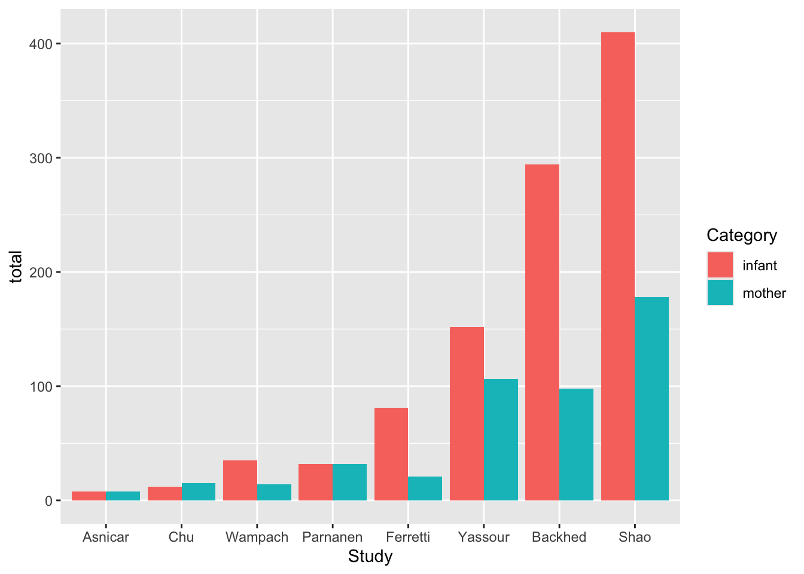
Finally, we can update the colors of the plot and add labels.
sample_counts %>%
mutate(Study = factor(Study, levels = study_order)) %>%
ggplot(aes(x = Study, y = total, fill = Category)) +
geom_col(position = position_dodge()) +
theme_minimal() +
labs(y = "Number of samples",
x = "Study",
title = "Number of Samples by Study and Category") +
theme(plot.title = element_text(hjust = 0.5))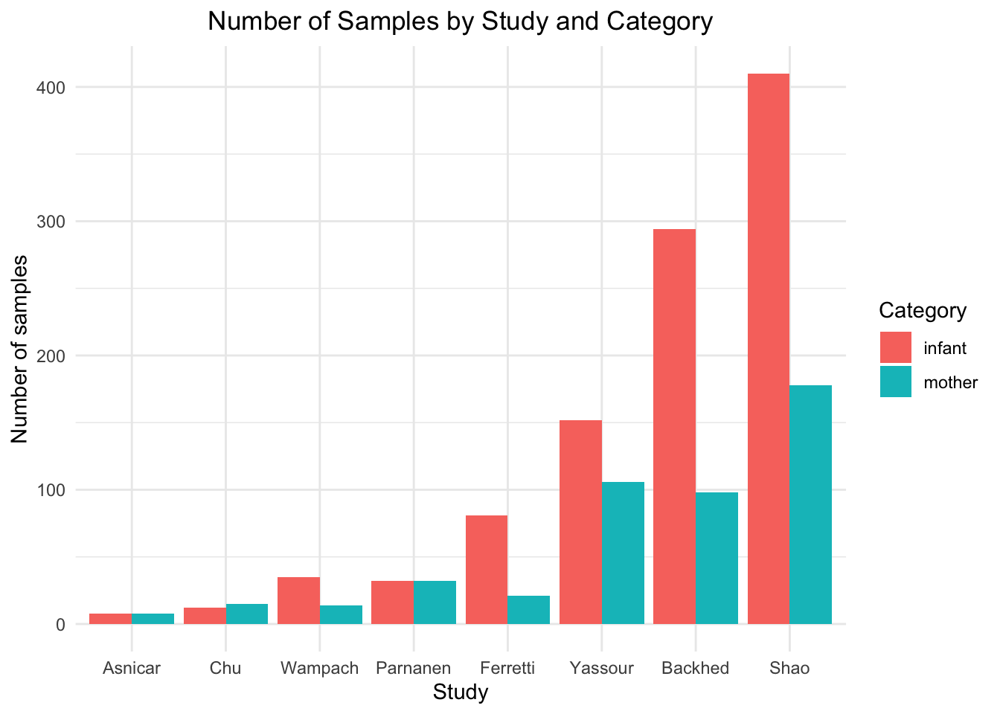
We will now use ggsave() to save this plot in the figures folder.
ggsave("figures/study_sizes_by_category.png", height = 6, width = 9)This is another great time to commit your current work.
Navigate back to GitHub Desktop. You should now see that “03_visualize_study_cohorts.qmd” has a check in the checkbox (meaning it is staged) and has an orange box next to it, which means the file has been modified. Add an appropriate commit message and commit this file.
Even though Git is already tracking “03_visualize_study_cohorts.qmd”, we still need to use git add to tell Git to stage this file for this commit.
git add 03_visualize_study_cohorts.qmdNext, add a commit with an appropriate commit message.
git commit -m "Add plot of study sizes to '03_visualize_study_cohorts'"Next we will consider the second question: how do these studies compare in terms of when they took samples after the birth of the infants. You may have noticed in the script “02_wrangle_data.R” that two studies took samples from mothers during pregnancy. This information is contained in the variable sampling_before_birth. We would like to exclude these observations from our plots, because their sampling_day is counted from the beginning of pregnancy and not since birth.
Create a data frame observations_after_birth that does not include these observations that were taken before birth.
Hint:
The function filter() will remove rows that match a certain logical condition.
Code:
observations_after_birth <- clean_metadata %>%
filter(!sampling_before_birth) Now, we will make a histogram of sampling day, where we separate the data by Category and Study. There are multiple ways to do this, but we will color the bars by Category and then use facet_wrap() to make separate panels for each study.
observations_after_birth %>%
ggplot(aes(x = sampling_day, fill = Category, group = Category)) +
geom_histogram(position = position_dodge(), bins = 20) +
facet_wrap(~Study, scale = "free_y") Warning: Removed 7 rows containing non-finite outside the scale range
(`stat_bin()`).
Notice that because we set scale = "free_y" in the facet_wrap(), each of the y-axes of the panels is different. Let’s order the studies in the same order that we used in the bar plot earlier. We will also update the theme and add axes labels.
observations_after_birth %>%
mutate(Study = factor(Study, levels = study_order)) %>%
ggplot(aes(x = sampling_day, fill = Category, group = Category)) +
geom_histogram(position = position_dodge(), bins = 20) +
facet_wrap(~Study, scale = "free_y") +
labs(x = "Days since birth at sampling",
y = "Count",
title = "Distribution of sampling day across studies") +
theme_minimal() +
theme(plot.title = element_text(hjust = 0.5))Warning: Removed 7 rows containing non-finite outside the scale range
(`stat_bin()`).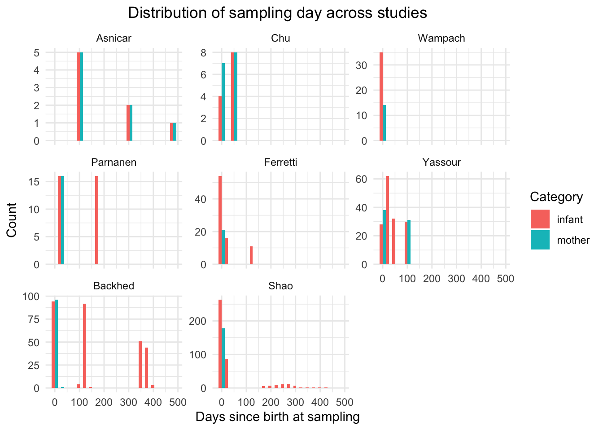
Finally, we will save this plot in the figures folder.
ggsave("figures/sampling_timepoints.png", height = 6, width = 9)Now that we have two plots, go back through your file “03_visualize_study_cohorts.qmd” to make sure that it contains all relevant code to make these two plots, and that there are explanations before each code chunk. Render your file to confirm that when rendered it will create these two plots.
Since you’ve performed the requested analysis, make sure to document any new files in this repository in the README.md file. After doing this, make another commit and push your work.
Navigate back to GitHub Desktop. You should now see the modifications that you’ve made to “03_visualize_study_cohorts.qmd”, as well as the added .png files for the figures. Add an appropriate commit message and commit. Then click “Push origin”, to push these changes that you’ve made locally to your remote repository.
We need to now make sure to stage “03_visualize_study_cohorts.qmd” and the figures that we’ve added. We can use git add . to tell Git to track all files that have changes in this repository.
git add .Next, add a commit with an appropriate commit message.
git commit -m "Add plot of sampling days to '03_visualize_study_cohorts' and document new files in README"Finally, push these changes that you’ve made locally to your remote repository. Because this is your first time pushing from a new branch, you will need to tell Git where you want to push to, adding the flag --set-upstream origin branch_name.
git push --set-upstream origin study_comparisonPull requests
What is a pull request?
Recall that in the initial description of branches, you learned that branches can be used for development of a new part of a project, separate from the stable version of a repository. A pull request is a way to take a collection of commits on a branch and request to merge those into another branch, typically “main”. A pull request will provide a list of each file that is changed in the branch, as well as the difference between each file and the version of that file on the branch that you are trying to merge your changes into. While you can review your own pull requests, they also have great built-in features for collaborators to review your pull request.
How to make a pull request
In the previous section, you worked locally to make the visualizations that Collab O. Rator had asked you for, and you staged, committed, and pushed these changes. Recall that you were working on a branch called “study comparison”. Let’s take a look at this branch on GitHub.
- Navigate back to “https://github.com/your_username/infant_gut_analysis.git” (replacing your username).
- Click underneath the repository name where is says “Branches”. This should take you to a page that shows you the existing branches (this should include “main” and “study_comparison”).
- Click on “study_comparison”.
- You should see a yellow banner with a green button that says “Compare & pull request”. Click on this button.
This set of steps will bring you to a page where you can make your pull request. The first thing to note is the panel at the top of the page, which gives you the base branch (this will by default be “main”) and the compare branch (this will be the branch you’ve been working on, in this case “study_comparison”). There is an arrow, showing that you are trying to merge the updates that you’ve made in the compare branch into the base branch.
to-do: add image of a pull request here!
There are a few useful components of this page in which you make a pull request. First, you have a spot to add a title and a description. If you scroll down, you’ll see a list of commits that make up this pull request along with the commit messages, and each of the files changed. On the right panel next to the title you’ll see an option for reviewers. If other users have access to this repository, then you can add them as a reviewer. They will get an email notification that you’ve requested a review from them.
Components of a good pull title and description
- A concise but descriptive title
- A description of the changes you want to merge. This is a good place to list files added and modified and give a quick description of those changes. Give plenty of context, you’ve likely been thinking about the code you want to merge more recently than your collaborator who will review it
- A request for code review (make specific requests: do you want your collaborator to review all changes? Do you want them to focus on a specific file or part of an analysis? do you just a bigger picture review to see if your approach to the problem makes sense?)
Add a title and a description for your pull request now.
Example pull request for this analysis
to-do: add image of pull request here!
Merging or closing pull requests
Once you have created a pull request, it is considered an “open” pull request and there are two potential actions, either merging it or closing it.
Merging pull requests
Let’s say that you submitted a pull request, you or your collaborator has decided that the changes look good, and you want to integrate the changes from your development branch into the base branch. This is called “merging” your pull request. This will either be easy or more complex, depending on whether there are conflicts between the two branches.
Merge conflict
When there are competing changes made to the same line of a file, or a file has been modified in one branch and deleted in another branch.
Typically, Git is able to automatically merge changes from one branch into another. However, a merge conflict happens when there are competing changes between the two branches, and Git needs you to manually decide how to resolve these differences. A merge conflict may arise in a scenario in which you made a branch from main, worked on that branch, and by the time you submit a pull request back to main, someone else has already committed to main and updated the same file as you have.
to-do: image of how merge conflict may have happened
In this pull request that you’ve made, you shouldn’t have any merge conflicts. However, see [add link to troubleshooting section] for information about how to resolve merge conflicts.
Closing pull requests
If you close a pull request without merging it, this means that you’ve decided not to integrate the changes from the compare branch into the base branch. This may happen if you decide to go in another direction with an analysis. You can close a pull request by clicking the “Close pull request” button at the bottom of the pull request page. It is important to close pull requests that are no longer active so that the set of open pull requests accurately represents the current state of the project.
Additional notes on pull requests
While your pull request is open, any additional changes that you commit and push to this branch will be automatically added to the pull request.
It is recommended to not let your pull requests get too large. A pull request should be a set of changes that address a certain component of an analysis. Try to avoid combining multiple parts of a project in a single pull request. If you decide to start working on a different part of a project, you can create a new branch for this, and eventually submit a new pull request from that branch. This is a great way to stay organized for complex projects that have different components happening in parallel.
Summary
Synopsis
In this case study, you’ve learned about why version control is used as part of reproducible science workflows. You’ve been introduced to Git and GitHub, and learned procedures for managing Git-tracked repositories locally using GitHub Desktop or the command line, and remotely using GitHub. You’ve practiced using the “pull -> stage -> commit -> push” workflow to make changes locally that are then tracked remotely. In your analysis, you worked in a branch, and you submitted a pull request in order to integrate new changes into a stable version of the code and as a way to ask a collaborate to review your code.
Along the way, you’ve also learned about the advantages and challenges of meta-analyses and best practices for scientific project organization.
Summary Plot
In order to create the final summary plot, please drag and drop the steps that you’ve followed in this case study into the correct order.
to-do: figure out how to make this into a drag and drop activity for the learner (see this platform))
Note: this is a mock-up of what the figure may look like, but a final version will be a little more detailed
Troubleshooting Git and GitHub
Most new and experienced users of Git and GitHub will run into problems occasionally. Luckily, version control is designed so that these problems can be solved, it just may take some time to get used to. There are many helpful resources online for common Git and GitHub problems, and AI chatbots can provide advice (add note here to verify AI advice before running it!). In this section, we will mention a few common Git and GitHub problems and provide solutions.
I’ve created a merge conflict. What is this? How do I fix it?
Typically the “pull” -> “edit” -> “stage” -> “commit” -> “push” workflow smoothly incorporates changes that are made locally into the remote repository. However, occasionally merge conflicts will occur and need to be fixed manually.
Merge conflict
When one branch is being merged into another, and the branches both edited the same line or a file differently, or one branch edited a file that is deleted by the other branch.
to-do: include image of merge conflict
to-do: how to solve merge conflicts
I’ve accidentally been working in the main branch, but I actually want my work to all go into a new branch. How do I switch branches and move this work with me?
I’ve staged and committed a file, but I don’t want to track it anymore. How can I remove it?
I’ve accidentally committed a large file. How do I remove this?
to-do: Also add a section about using AI with Git and GitHub, it can be very helpful but make sure it doesn’t have you do something destructive!
Continued Learning
Common Next Steps
Discuss common next steps for this type of an analysis in this box. Is there a specific number of steps that you need to do before a specific step? Is a “next step” more of an alternate step?
Forking
to-do: Create the GitHub repo for them to fork and draft this section!
This could be a good place to talk about forking. Give a quick explanation of forking, and then ask user to fork the repo (this will be the same as the project files that they downloaded early in the case study), make a change (something quick and easy), and then push and open a pull request. Describe how pull requests are similar and different when made between branches in a repo vs from a fork to the upstream repo. They can either stop before opening the pull request, or open it and then close it when they are done (to avoid having a long list of open pull requests on this educational repo). I’m not sure if this should be its own section, or if it should be here in suggested homework (therefore making it optional).
Merge conflicts
Another piece of suggested homework could be creating Git problems (such as those addressed in the troubleshooting section) and then fixing those problems. We could come up with a way to address a merge conflict (by committing different conflicting things to main and to an additional branch) and then have the learner resolve this change.
Advancement Exercises
Use this section to suggest different levels of exercises that build upon topics from the case study … next steps, tangential skills, diving deeper into a side quest, etc.
Perhaps explain how the suggested exercises relate to the common next steps.
Beginner
Intermediate
Advanced
Additional Information
References
Andrade, Chittaranjan. 2025. “A Primer on Individual Participant Data Meta-Analysis and Its Strengths and Limitations.” J Clin Psychiatry 86 (3): 25f16001.
DerSimonian, Rebecca, and Nan Laird. 1986. “Meta-Analysis in Clinical Trials.” Controlled Clinical Trials 7 (3): 177–88.
Han, Yu, Zian Wang, Jiahao Xie, et al. 2026. “Host–Gut Microbiota Interactions in Health and Disease: Mechanisms and Intervention Strategies.” Frontiers in Microbiology 17: 1785607.
Wang, Shaopu, Shuqin Zeng, Muireann Egan, et al. 2021. “Metagenomic Analysis of Mother-Infant Gut Microbiome Reveals Global Distinct and Shared Microbial Signatures.” Gut Microbes 13 (1): 1911571.
Helpful Links
- happy git with R: online book that covers most relevant topics for using Git and GitHub with R
- How to Use Git/GitHub with R: blog post about getting Git and GitHub set up and working with RStudio. This uses the built-in Git GUI in RStudio instead of GitHub Desktop
- Dangit, Git!?!: brief description of some common Git errors and how to resolve them
- Intro to reproducibility in cancer informatics: short course on reproducibility for scientific projects, includes Git and GitHub in chapter 4 and provides other resources on reproducibility
- Advanced reproducibility in cancer informatics: short course on more advanced reproducibility for scientific projects, includes GitHub in chapter 3 and provides other resources on reproducibility
- Carpentries:
- Install Git: instructions on installing Git (and other types of software)
- Set up Git: instructions on setting up Git
- Build on existing branch: instructions on how to work from a branch on someone else’s fork of a repository
- Hands on introduction to Git and GitHub: another introduction to Git and GitHub, covering some overlapping material and some additional material
- Contributing to Galaxy Training Network with GitHub: tutorial on how to contribute to an open source project with GitHub
- GitHub cheatsheet: cheatsheet with Git commands that can be used in the command line
Terms and concepts covered:
to-do: add glossary here!
Packages used in this case study:
Glossary
| Term | Definition |
|---|---|
| Term 1 | Definition of Term 1 |
| Term2 | Definition of Term 2 |
References
Andrade, Chittaranjan. 2025. “A Primer on Individual Participant Data Meta-Analysis and Its Strengths and Limitations.” J Clin Psychiatry 86 (3): 25f16001.
DerSimonian, Rebecca, and Nan Laird. 1986. “Meta-Analysis in Clinical Trials.” Controlled Clinical Trials 7 (3): 177–88.
Han, Yu, Zian Wang, Jiahao Xie, et al. 2026. “Host–Gut Microbiota Interactions in Health and Disease: Mechanisms and Intervention Strategies.” Frontiers in Microbiology 17: 1785607.
Wang, Shaopu, Shuqin Zeng, Muireann Egan, et al. 2021. “Metagenomic Analysis of Mother-Infant Gut Microbiome Reveals Global Distinct and Shared Microbial Signatures.” Gut Microbes 13 (1): 1911571.
Session Info
devtools::session_info()─ Session info ───────────────────────────────────────────────────────────────
setting value
version R version 4.5.2 (2025-10-31)
os macOS Tahoe 26.3.1
system aarch64, darwin20
ui X11
language (EN)
collate en_US.UTF-8
ctype en_US.UTF-8
tz America/Los_Angeles
date 2026-06-15
pandoc 3.8.3 @ /Applications/RStudio.app/Contents/Resources/app/quarto/bin/tools/aarch64/ (via rmarkdown)
quarto 1.9.37 @ /Applications/RStudio.app/Contents/Resources/app/quarto/bin/quarto
─ Packages ───────────────────────────────────────────────────────────────────
package * version date (UTC) lib source
cachem 1.1.0 2024-05-16 [1] CRAN (R 4.5.0)
cellranger 1.1.0 2016-07-27 [1] CRAN (R 4.5.0)
chromote 0.5.1 2025-04-24 [1] CRAN (R 4.5.0)
cli 3.6.6 2026-04-09 [1] CRAN (R 4.5.2)
curl 7.1.0 2026-04-22 [1] CRAN (R 4.5.2)
devtools 2.5.2 2026-04-30 [1] CRAN (R 4.5.2)
digest 0.6.39 2025-11-19 [1] CRAN (R 4.5.2)
dplyr * 1.2.1 2026-04-03 [1] CRAN (R 4.5.2)
ellipsis 0.3.3 2026-04-04 [1] CRAN (R 4.5.2)
evaluate 1.0.5 2025-08-27 [1] CRAN (R 4.5.0)
farver 2.1.2 2024-05-13 [1] CRAN (R 4.5.0)
fastmap 1.2.0 2024-05-15 [1] CRAN (R 4.5.0)
fs 2.1.0 2026-04-18 [1] CRAN (R 4.5.2)
generics 0.1.4 2025-05-09 [1] CRAN (R 4.5.0)
ggplot2 * 4.0.3 2026-04-22 [1] CRAN (R 4.5.2)
gitcreds 0.1.2 2022-09-08 [1] CRAN (R 4.5.0)
glue 1.8.1 2026-04-17 [1] CRAN (R 4.5.2)
gtable 0.3.6 2024-10-25 [1] CRAN (R 4.5.0)
here * 1.0.2 2025-09-15 [1] CRAN (R 4.5.0)
hms 1.1.4 2025-10-17 [1] CRAN (R 4.5.0)
htmltools 0.5.9 2025-12-04 [1] CRAN (R 4.5.2)
htmlwidgets 1.6.4 2023-12-06 [1] CRAN (R 4.5.0)
httr 1.4.8 2026-02-13 [1] CRAN (R 4.5.2)
jsonlite 2.0.0 2025-03-27 [1] CRAN (R 4.5.0)
knitr 1.51 2025-12-20 [1] CRAN (R 4.5.2)
labeling 0.4.3 2023-08-29 [1] CRAN (R 4.5.0)
later 1.4.8 2026-03-05 [1] CRAN (R 4.5.2)
lifecycle 1.0.5 2026-01-08 [1] CRAN (R 4.5.2)
magrittr 2.0.5 2026-04-04 [1] CRAN (R 4.5.2)
memoise 2.0.1 2021-11-26 [1] CRAN (R 4.5.0)
otel 0.2.0 2025-08-29 [1] CRAN (R 4.5.0)
ottrpal 2.0.0 2025-03-31 [1] CRAN (R 4.5.0)
pillar 1.11.1 2025-09-17 [1] CRAN (R 4.5.0)
pkgbuild 1.4.8 2025-05-26 [1] CRAN (R 4.5.0)
pkgconfig 2.0.3 2019-09-22 [1] CRAN (R 4.5.0)
pkgload 1.5.2 2026-04-22 [1] CRAN (R 4.5.2)
processx 3.9.0 2026-04-22 [1] CRAN (R 4.5.2)
promises 1.5.0 2025-11-01 [1] CRAN (R 4.5.0)
purrr 1.2.2 2026-04-10 [1] CRAN (R 4.5.2)
R6 2.6.1 2025-02-15 [1] CRAN (R 4.5.0)
RColorBrewer 1.1-3 2022-04-03 [1] CRAN (R 4.5.0)
Rcpp 1.1.1-1.1 2026-04-24 [1] CRAN (R 4.5.2)
readr 2.2.0 2026-02-19 [1] CRAN (R 4.5.2)
readxl * 1.4.5 2025-03-07 [1] CRAN (R 4.5.0)
rlang 1.2.0 2026-04-06 [1] CRAN (R 4.5.2)
rmarkdown 2.31 2026-03-26 [1] CRAN (R 4.5.2)
rprojroot 2.1.1 2025-08-26 [1] CRAN (R 4.5.0)
rstudioapi 0.18.0 2026-01-16 [1] CRAN (R 4.5.2)
rvest 1.0.5 2025-08-29 [1] CRAN (R 4.5.0)
S7 0.2.2 2026-04-22 [1] CRAN (R 4.5.2)
scales 1.4.0 2025-04-24 [1] CRAN (R 4.5.0)
sessioninfo 1.2.3 2025-02-05 [1] CRAN (R 4.5.0)
spelling 2.3.2 2025-08-18 [1] CRAN (R 4.5.0)
stringi 1.8.7 2025-03-27 [1] CRAN (R 4.5.0)
stringr * 1.6.0 2025-11-04 [1] CRAN (R 4.5.0)
tibble 3.3.1 2026-01-11 [1] CRAN (R 4.5.2)
tidyr 1.3.2 2025-12-19 [1] CRAN (R 4.5.2)
tidyselect 1.2.1 2024-03-11 [1] CRAN (R 4.5.0)
tzdb 0.5.0 2025-03-15 [1] CRAN (R 4.5.0)
usethis 3.2.1 2025-09-06 [1] CRAN (R 4.5.0)
utf8 1.2.6 2025-06-08 [1] CRAN (R 4.5.0)
vctrs 0.7.3 2026-04-11 [1] CRAN (R 4.5.2)
webshot2 0.1.2 2025-04-23 [1] CRAN (R 4.5.0)
websocket 1.4.4 2025-04-10 [1] CRAN (R 4.5.0)
withr 3.0.2 2024-10-28 [1] CRAN (R 4.5.0)
xfun 0.57 2026-03-20 [1] CRAN (R 4.5.2)
xml2 1.5.2 2026-01-17 [1] CRAN (R 4.5.2)
yaml * 2.3.12 2025-12-10 [1] CRAN (R 4.5.2)
[1] /Library/Frameworks/R.framework/Versions/4.5-arm64/Resources/library
* ── Packages attached to the search path.
──────────────────────────────────────────────────────────────────────────────Acknowledgments
We would also like to acknowledge the National Institute of General Medical Sciences for funding this work (1R25GM160622).
Icons are from iconpacks.
Avatars are from avataaars